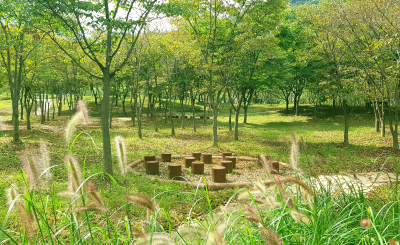
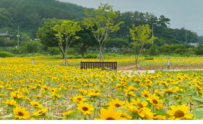
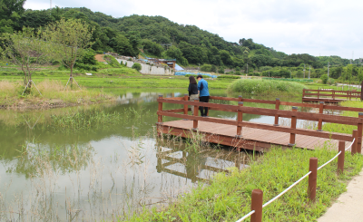

조성 배경
조성 현황
- 소 재 지 : 대전광역시 동구 세천동 22 일원
- 면 적 : 32,042㎡
- 조성기간 : 2020년 3월 - 11월
- 공간구성 : 계절화원, 생태습지, 생태보전지역, 잔디마당, 숲정이(탄소저감숲), 편의시설(휴게쉼터, 주차장, 화장실) 등
조성 배경

주변 산림과 그린네트워크 구축을 위해 농장, 휴경지 등 훼손지를 복원하여 조성한 자연생태공간입니다.
2020년도에 조성된 금강수계 생태마당 1호는 조경수 농장으로 사용되었던 토지를 매수하여 기존 수목 중 대기정화 기능이 우수한 수종을 선별•보존한 후, 기후변화 대응을 위한 탄소저감숲, 숲길 산책로 및 생태교육공간으로 조성한 자연 속 생태문화교육 장소입니다.

금강생태마당은 지역주민의 소중한 생태체험, 휴식공간입니다.
나무수국, 산철쭉, 금계국 등 계절별 꽃을 관람할 수 있는 계절화원, 자연속에서 생태놀이와 교육을 할 수 있는 잔디마당, 편안한 휴식을 취할 수 있는 휴게 쉼터 등을 조성하여 지역민에게 생태체험, 휴식공간을 제공하고 있습니다.

주변 농경지에서 발생한 비점오염물질은 생태습지를 통해 자연정화가 이루어집니다.
계단식 논의 하단에 위치한 생태습지는 농경지에서 발생한 비점오염물질을 저류하고, 창포, 부들 등 수질정화 식물에 의해 자연정화가 이루어져 금강 수질 개선에 기여하고 있습니다.